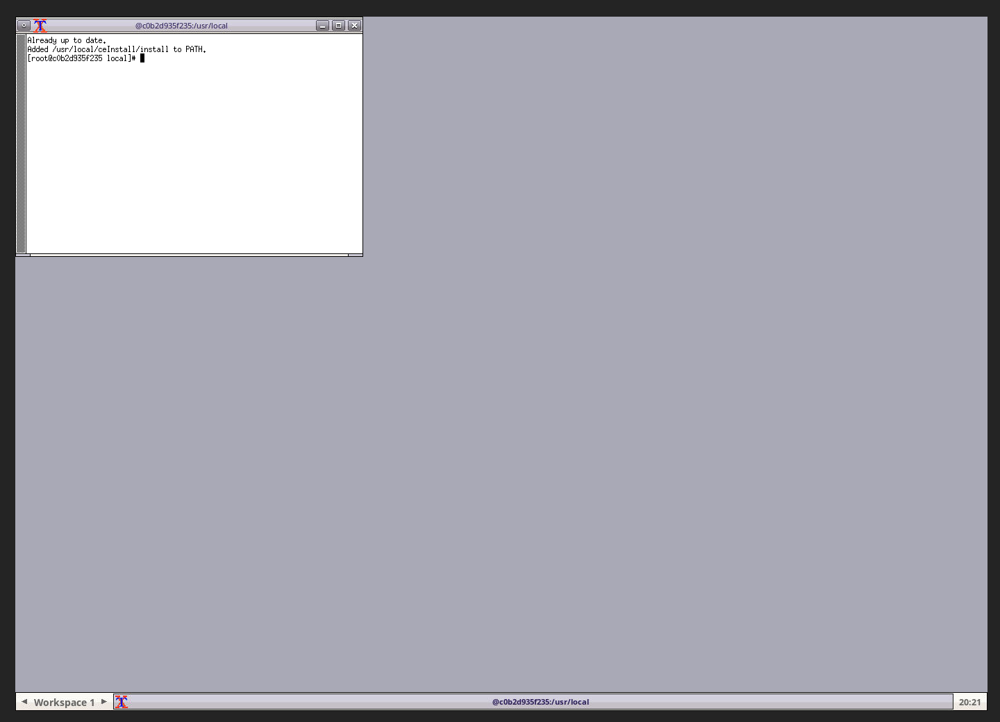

Docker is a tool designed to make it easier to run applications by using containers.
Containers allow a developer to package up an application with all of the parts it needs,
such as libraries and other dependencies, and ship it all out as one package.
Docker is available for Linux, Windows and MacOS. You can find the installation instructions
for your OS here.
We have the fdollowing docker image with Geant4 ###G4VERSION installed:
- ###DOCKERIMAGEFEDORA
- ###DOCKERIMAGEUBUNTU
- ###DOCKERIMAGEALMA
You can pull one by running the following command (note, you only need to pull once):
$ docker pull ###DOCKERIMAGEFEDORA
A good way to use this image is to create a directory on your local machine
to share with the container (we'll use ~/mywork as an example). This way you can edit your work
on your local machine and run it in the container.
$ mkdir ~/mywork
Run the image in batch mode or interactively, mounting ~/mywork and making it available as /usr/local/mywork.
Here is how:
Run in Batch Mode:
Notice in batch mode you will not be able to run Geant4 examples/applications with GUIs.
$ docker run --platform linux/amd64 -it --rm -v ~/mywork:/usr/local/mywork ###DOCKERIMAGEFEDORA bash
In batch mode the environment will load automatically and you will see this prompt:
[root@8eec32cdb4ea local]#
You are now inside the container, and can run Geant4 examples/applications w/o GUIs.
When you are done, type exit to leave the container.
Run Interactively:
Running the container interactively and accessing it throug a web browser is a good way to run Geant4 examples/applications with GUIs.
$ docker run --platform linux/amd64 -it --rm -p 8080:8080 -v ~/mywork:/usr/local/mywork ###DOCKERIMAGEFEDORA
On some MacOS systems with M[1,2,3] CPU, you may need to disable the "Use Rosetta" option for docker to run properly.
In interactive mode a prompt will not appear, but the following message will be displayed:
Browse to:
http://localhost:8080/vnc.html
Navigate to the URL in your web browser to access the container's desktop environment. You will
see this image:
|
Click the connect button to access the container's desktop environment. You will be able to run Geant4 examples/applications with GUIs:
 |
When you are done, CNTRL-C in the terminal to stop the container.